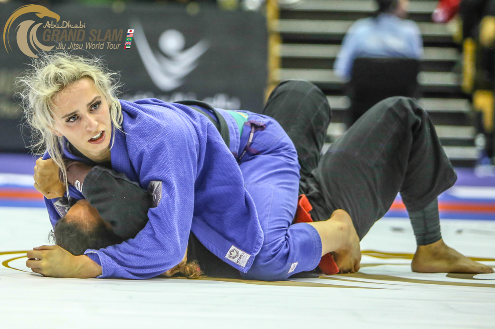
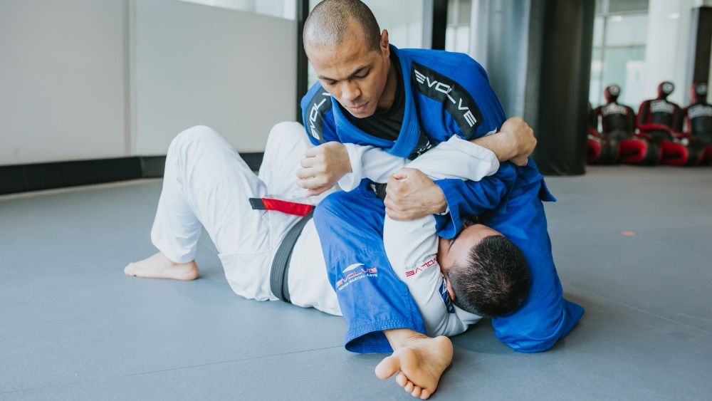
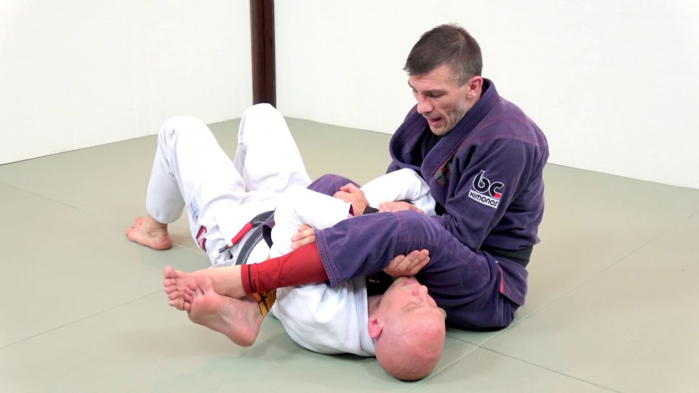

Start in the mount position with your knees on the ground, and your opponent underneath you.
Secure control of your opponent's arm by grabbing the wrist and pinning it to the ground.
Swing one of your legs over your opponent's head, bringing it across their chest.
Apply pressure on your opponent's elbow using your hips and lower your body to finish the armbar.